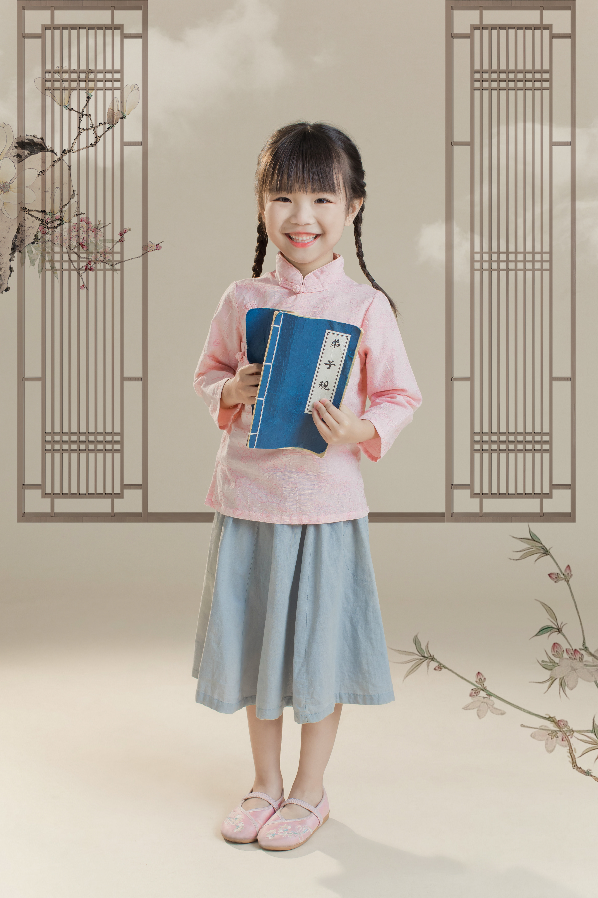

field notes / 001
Student · Explorer · Builder
Curious about
what floats beneath.
Hi, I’m Shenliiu. I’m a student interested in jellyfish, thoughtful technology, and the questions that connect science with everyday life.
Selected work
A few things I’m exploring
experiment / 002
notes / 003

hello, I’m shenliiu ↗A little about me
Learning in public,
one question at a time.
I’m currently building my skills through school, independent research, and hands-on projects. I like working where science, design, and technology overlap.
I’m open to internships, research opportunities, and conversations with people making meaningful things.
ResearchWritingData visualizationCuriosity
Have a question or opportunity?